Daily AI Architecture Slide
GPT-5.6 Sol — OpenAIが切った「高性能エージェントAI」段階公開の号砲
2026年6月26日、OpenAIが発表したGPT-5.6シリーズは、AIが「問いに答えるチャットツール」から、自律的に任務を完遂する**「エージェント・インフラ」**へと進化したことを宣言しました。このリリースは単なる性能向上に留まらず、AIが国家の安全保障を左右する「戦略物資」として、政府の直接的な管理下に置かれた歴史的転換点でもあります。

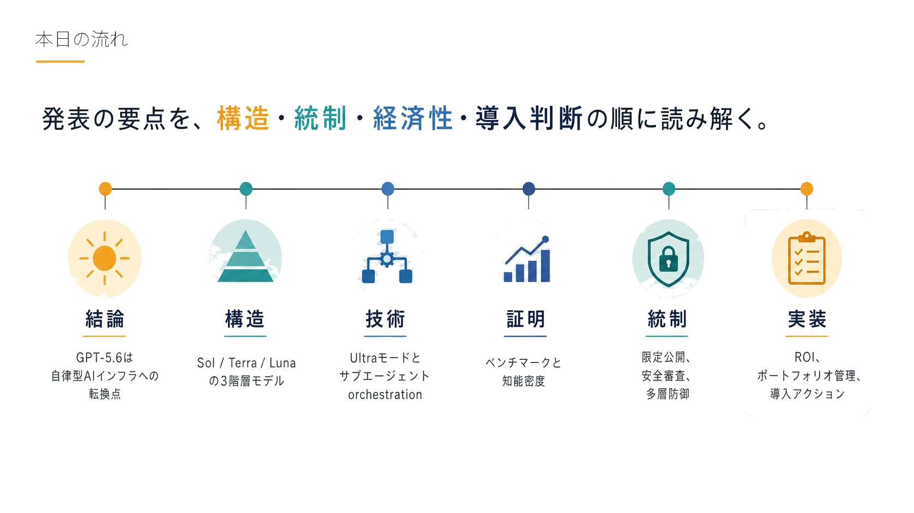
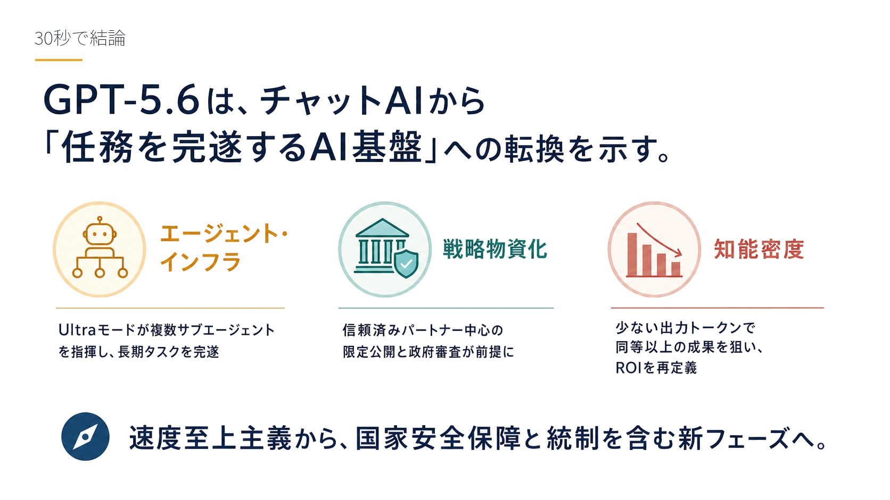
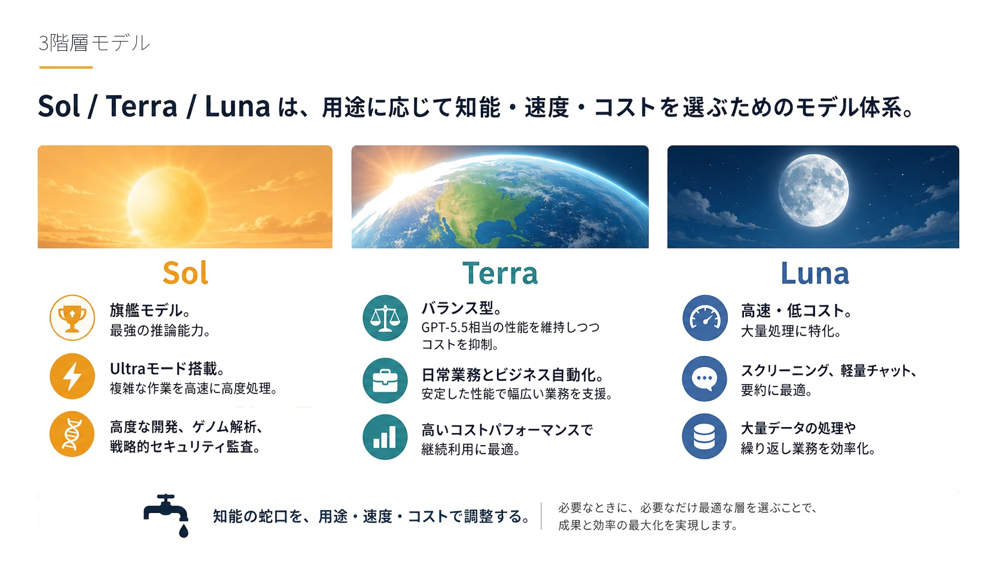
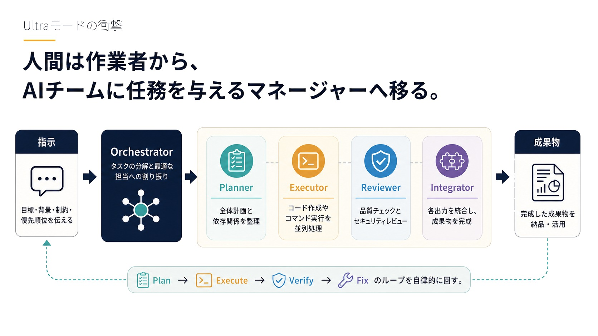
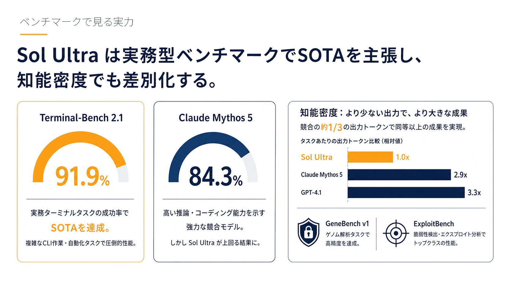
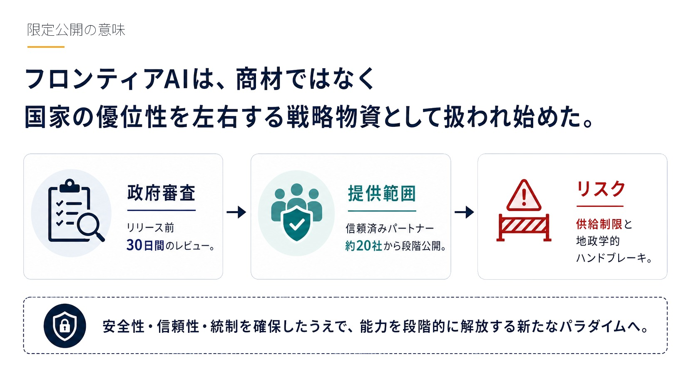
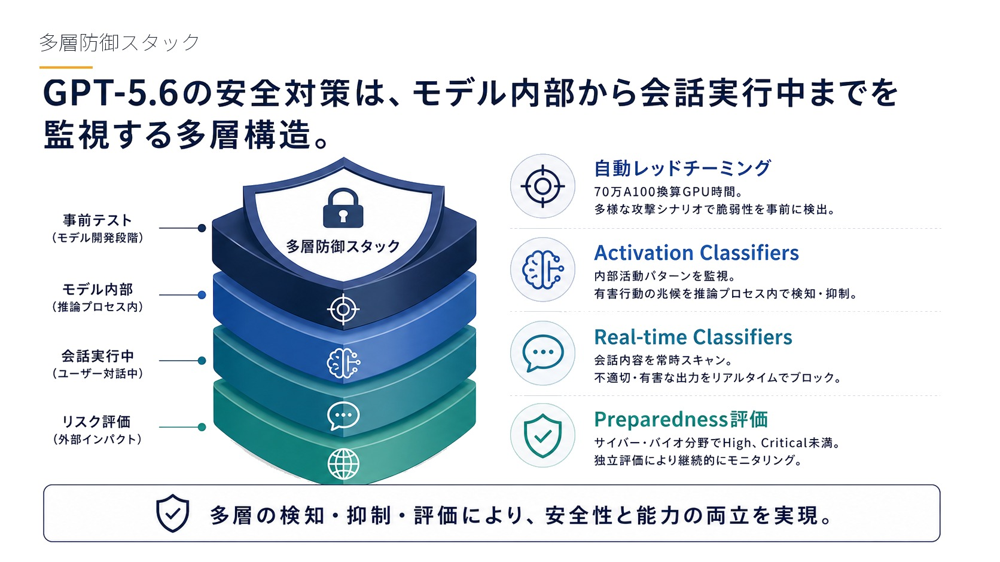
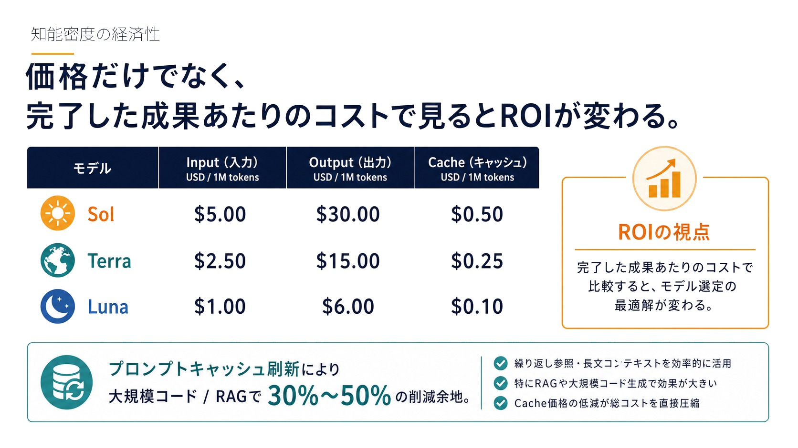
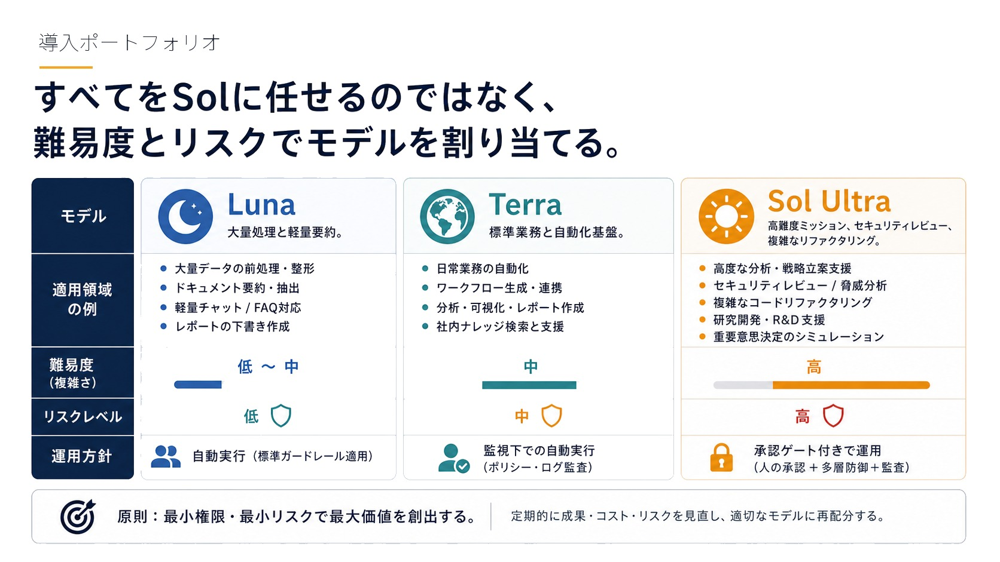
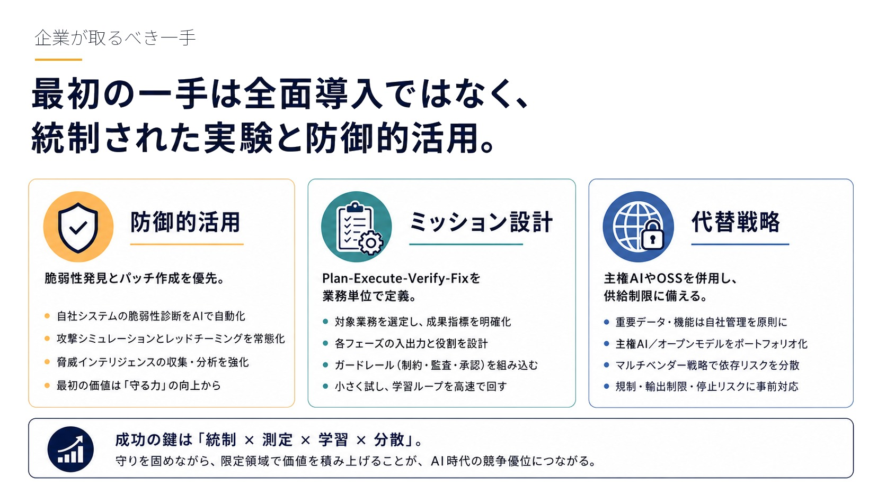
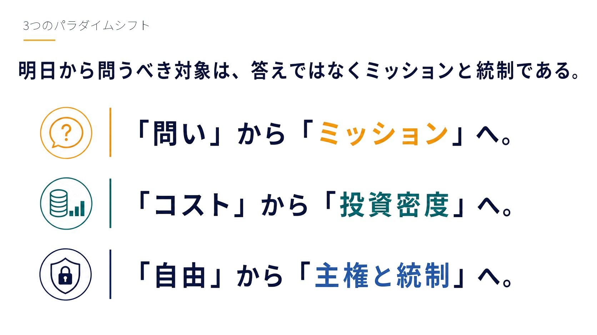
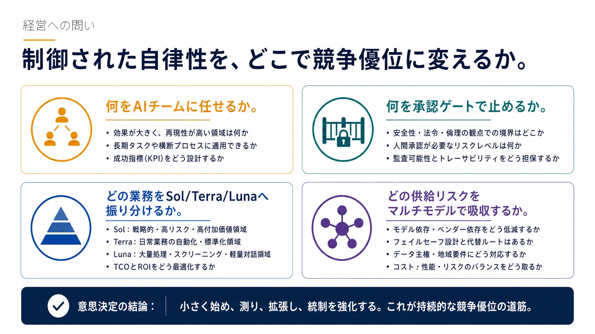
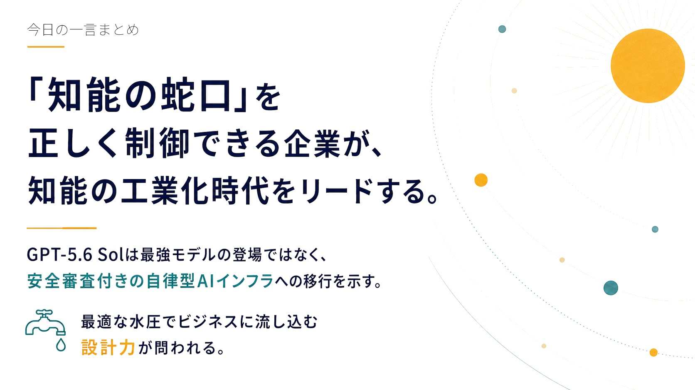